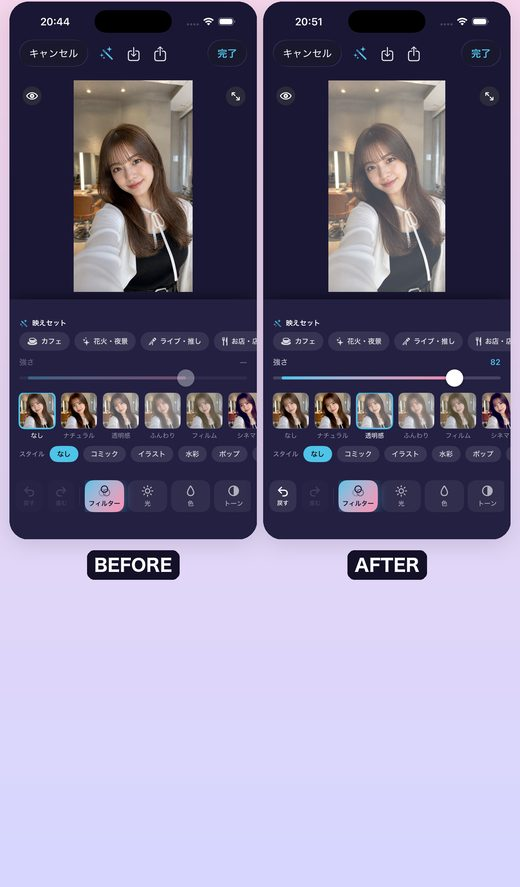
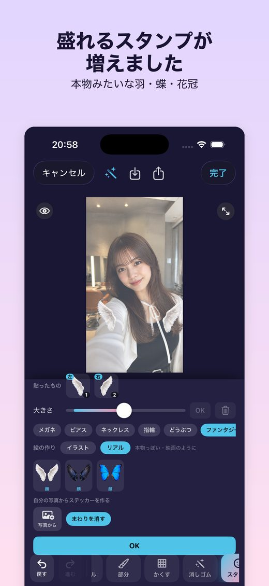
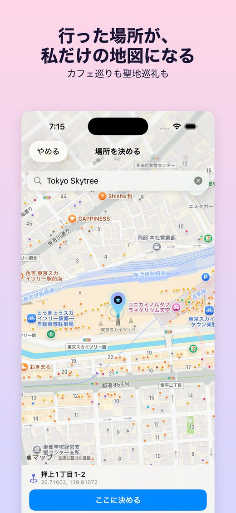
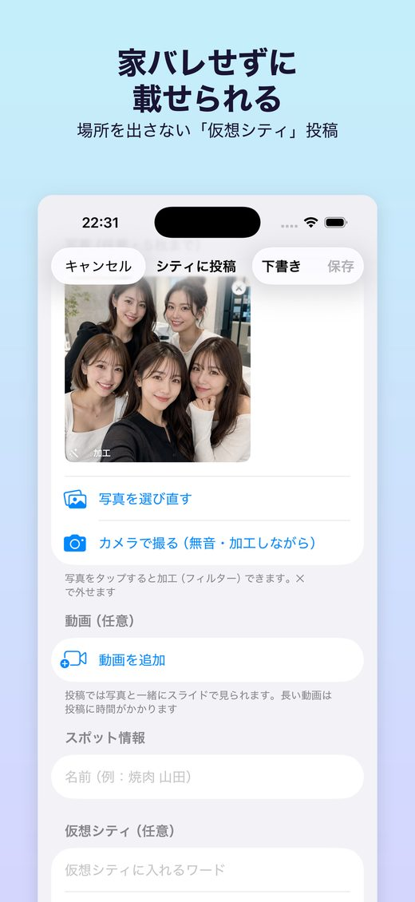

先行テストの入れ方（iPhone）
新しい 2.0 を、App Store に並ぶ前に試せます。感想やバグは、アプリの中の「フィードバックを送信」からどうぞ。
1. TestFlight を入れる
App Store で「TestFlight」（Apple の無料アプリ）を入れます。
2. 招待リンクを開く
上の「先行テストに参加」を押す →「テストを開始」→ PinShare をインストール。
3. 使ってみる
最初の案内（4枚）のあと、地図を長押しでピン。ピン友グループは「＋」→「ピン友に送る」から。
できること
「撮る・盛る・残す」がひとつのアプリで終わります。
押すだけで盛れる
気に入った加工は「マイ設定」に名前を付けて保存。次の写真も1タップで同じ仕上がりに。美肌・メイク・小顔・背景ぼかし、天使の羽やピアスは顔に合わせて自動で乗ります。
私だけの地図が育つ
行った場所にピンを立てて写真と一緒に残すと、自分だけの地図ができていきます。カフェ巡りも聖地巡礼も、行くほど濃くなります。
家バレせずに載せられる
場所を出したくない投稿は「仮想シティ」へ。架空の街に置かれ、実際の位置は出ません。写真の位置情報も保存時に取り除いています。
音の鳴らないカメラ
フィルターを見ながら、シャッター音を出さずに撮れます。静かなカフェでも気兼ねなく。撮ったらそのまま加工へ。
巡るコースを組む
お店やピンを並べて、滞在時間つきの行程表に。歩きナビで「いま何番目か」を見ながら巡れます。
ピン友と今日の1枚
同じ趣味・同じ推しのピン友グループを作ると、離れていてもみんなの「今日の1枚」がひとつの画面に。おすすめのお店や聖地の情報も共有できます。
画面
実際のアプリの画面です。




安心して使うために
- 投稿の公開範囲は選べます。既定は「自分だけ」です。
- すべての投稿に通報機能、相手のブロック・ミュートがあります。
- 写真の位置情報（Exif）は保存時に取り除いています。
- 写真の加工は端末の中だけで完結します（顔を見つける処理も端末内です）。